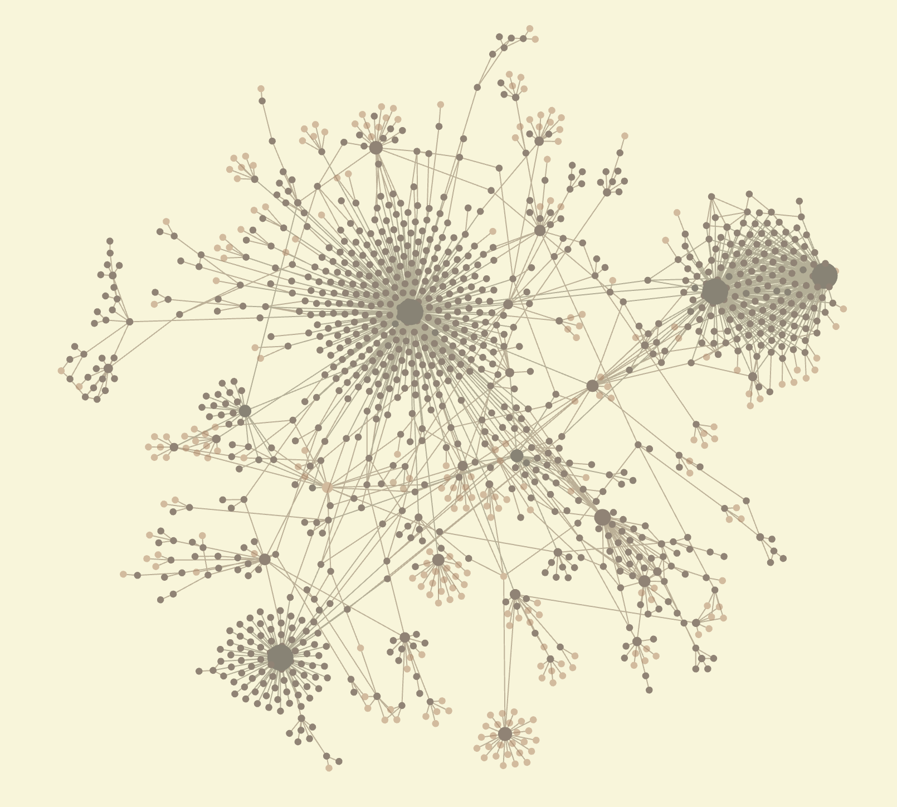

Personal Knowledge Management (PKM)
What are PKMs?
PKMs are a way to manage your personal knowledge. In the digital age, the content we consume becomes
overwhelming. Be it movies or video games, I often end up consuming more than I create. To remedy this, I
try to
create as I consume using a PKM. With every movie I watch, and every game I play, I make sure I note my
thoughts
on it.
PKMs are useful because they allow your knowledge to compound in value over time. Here's how that works with
Obsidian, the tool I use for my PKM. Obsidian is not only a note taking app like Notion, Evernote, etc. This
is
because it's really just a wrapper for editing markdown files in a folder. There are several advantages to
this.
Firstly, this makes your notes future-proof and portable to any other system. If you don't find Obsidian to
work
for you, there's no loss since it's just an editor of your local markdown files. This also means there isn't
any
proprietary file formats that would make migrating to another note-taking app difficult.
The key advantage of Obsidian is that it treats each file as a node in a graph. This encourages both an
emergent
file structure and linking your thoughts.
Emergent file structures
Traditional note-taking systems which use a top-down approach to note-taking. For example, you'd first create
a
folder called "Math 101", and you'd put all your math notes in that folder. Obsidian uses a bottom-up
approach to
organization. While you can still create folders and place notes in them, Obsidian also allows you to make
notes
on the fly, and organize them later. For example, you can create as many math notes as you want, add a
#Math_101
tag to it, and all your math notes can be found through this tag.
This is useful primarily because you often don't know what the note structure looks like in the beginning.
The
ideal structure of a note system often shows up ony after you write a few notes. This is why an emergent,
evolving
and bottom-up file structure like Obsidian is useful.
Linked Thinking
Since Obsidian treats each file as a node, you can treat each note as an entity. This is similar to how the
internet is structure. For example, if you were to search for "Los Angeles" in Google, it returns the "Los
Angeles" entity, including attributes like the country, the state, etc. The suggested searches might be the
country (U.S.) or state (California) that it's in. These are two additional entities that the user can go
to. As
you zoom out, you can see how the internet is composed of a series of nodes/entities linked to each other.
Using this approach to note-taking, I might be watching the movie "Delicatessen". I create a new note for
this
entity, such as my review on it, the plot, etc. However, I might realize that I wanted to take notes about
the
director, 'Jean Pierre Jeunet". I can not only create another entity for the director, but also link the
movie to
the director. Over time, I might have multiple movies directed by him, each as a separate note, pointing to
him.
The benefit of linked notes is that you are more likely to rediscover past notes. You might look into one
note, and explore a chain of notes that are linked to it. In other words, linking makes your notes more
useful
because rediscovery of older notes are more likely.
Here's an example of what that could look like. In the image below, there is a note for Jean Pierre Jeunet,
and
it's linked to 3 notes on movies that he directed. all my notes look like in a large graph.
Here's what my global graph looks like, which is essentially every single note I have, and the connections between them.
